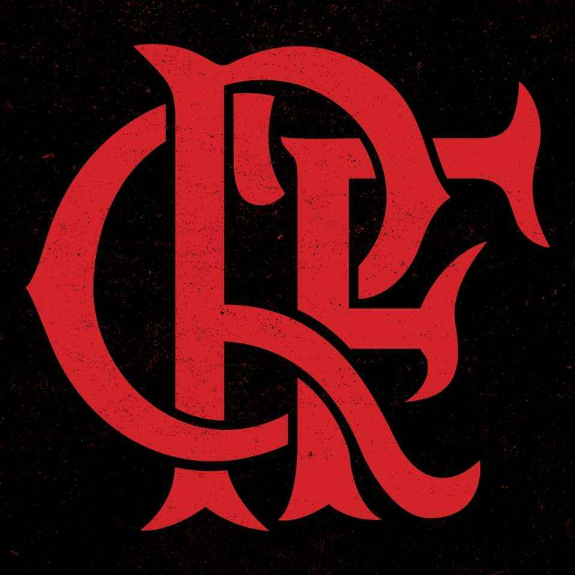
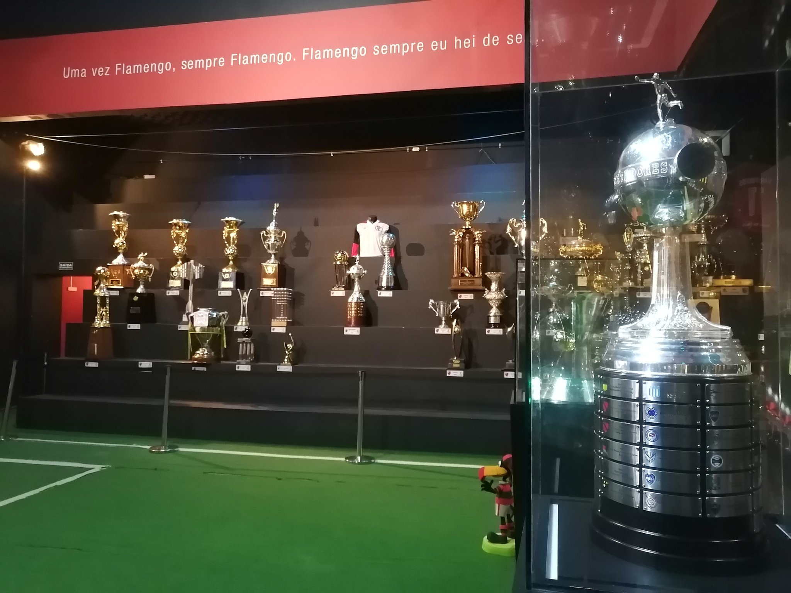

UMA VEZ FRAMENGO, SEMPRE FRAMENGO
Como Surgiu o Time de Futebol do Flamengo

A equipe de futebol do Flamengo foi criada em decorrência de
uma desavença em seu rival Fluminense, em 1911. O atleta Alberto Borgerth,
que jogava futebol no Fluminense e remava no Flamengo, propôs a criação de uma seção de futebol
no clube de regatas e foi assim que nasceu o Departamento de Esportes Terrestres.
Todos os Titulos
INTERNACIONAIS
Mundial interclubes - 1981
Taça Libertadores da América - 1981, 2019 e 2022
Copa Mercosul - 1999
Copa Ouro Sul-americana - 1996 (invicto)
Recopa Sul-Americana - 2020
NACIONAIS
Brasileirão - 1980, 1982, 1983, 1992, 2009, 2019 e 2020
Copa União - 1987
Copa do Brasil - 1990, 2006, 2013 e 2022
Supercopa do Brasil - 2020 e 2021
Copa dos Campeões - 2001
